Заказ владельца 2026-11-20: окно CEO перемещается и меняет размер, кривые кнопки привести к одной системе, приветственный блок оставить лёгким. Снимки сделаны со стенда экранов (apps/desktop/stand, экран ceo и home) с одинаковыми данными; в настоящем окне слева в шапке стоит светофор macOS. Перемещение, размер и запоминание места проверены тестами (windowPlacement.test.ts), не снимками.
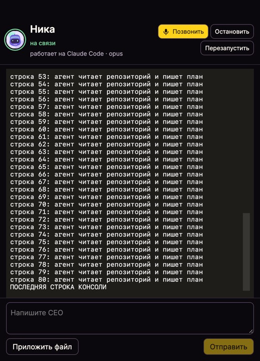
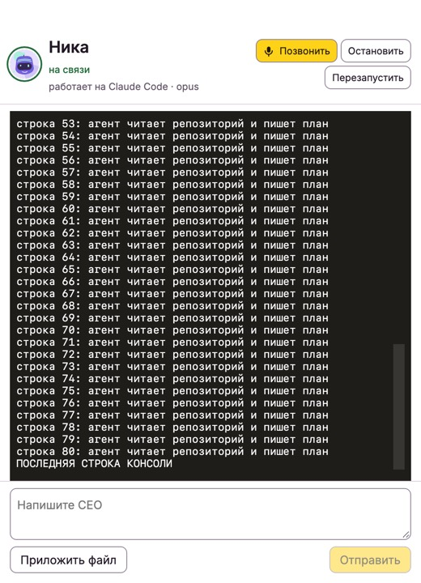
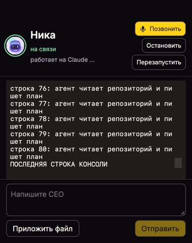
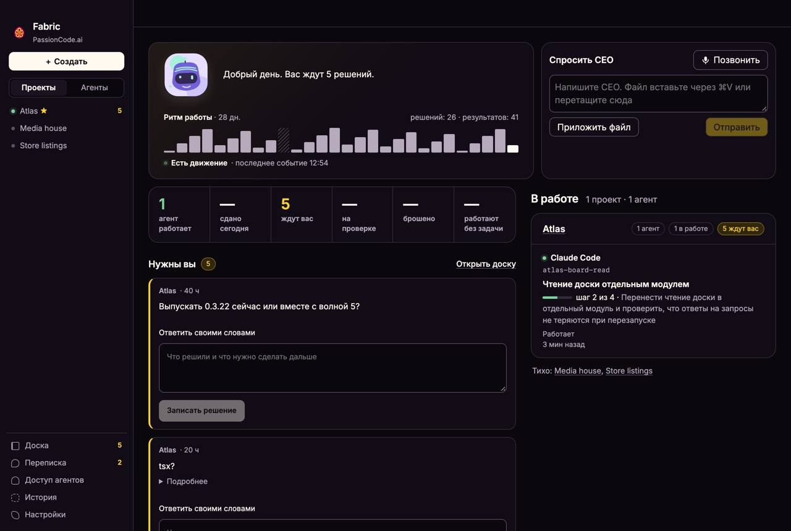
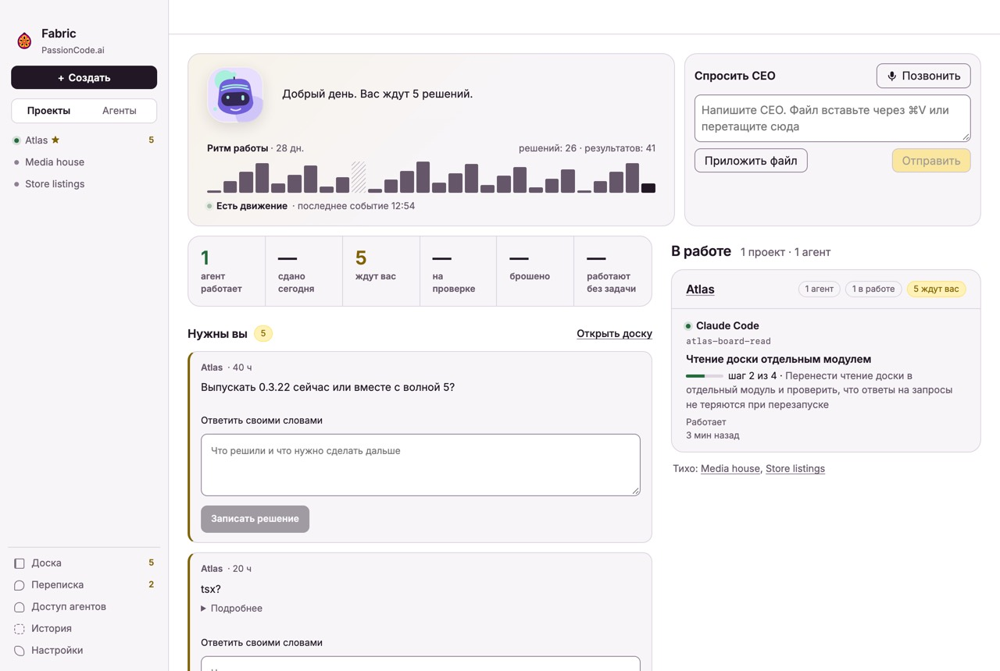
Шапка стала заголовком окна: одна строка 52 px рядом со светофором, за неё окно перетаскивается. «Позвонить» контурная, как на главной; «Остановить» и «Перезапустить» тихие значки с названием при наведении. Неактивная основная кнопка нейтральная, а не бледно-жёлтая.
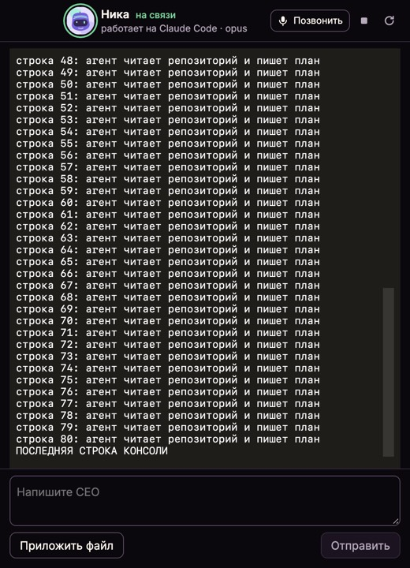
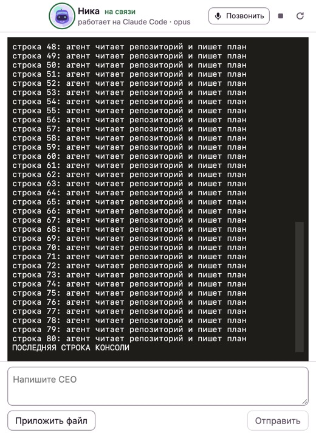
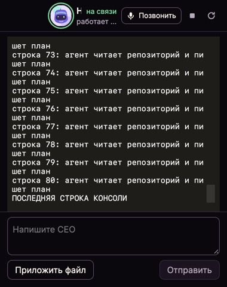
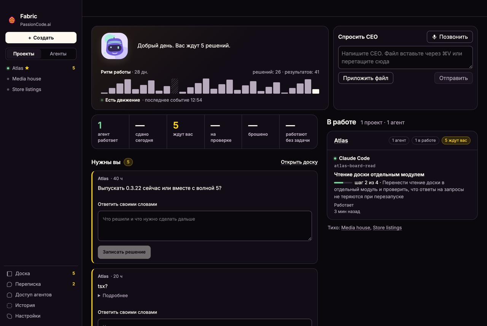
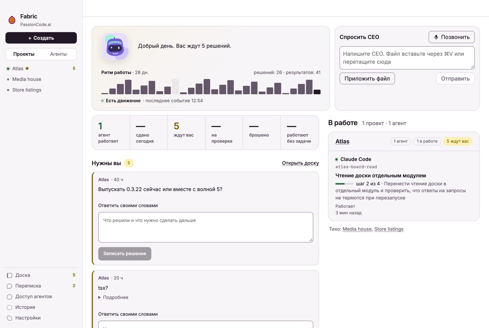
В узком окне имя остаётся видно, «Позвонить» сжимается до значка. Кнопки формы того же размера 28 px, что в шапке.
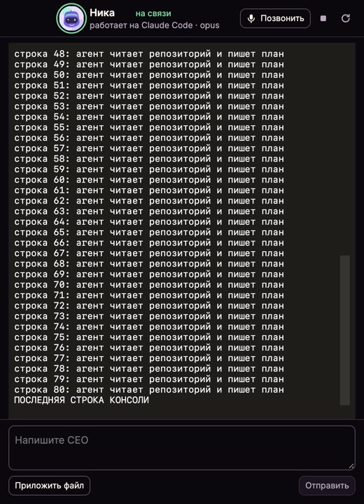
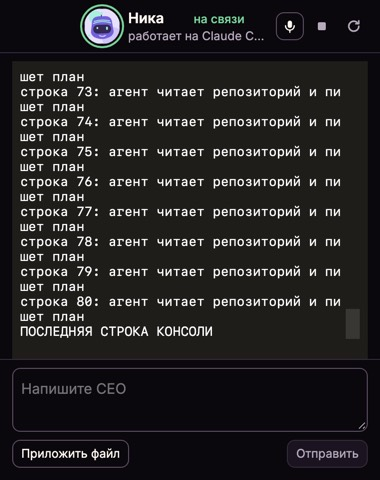
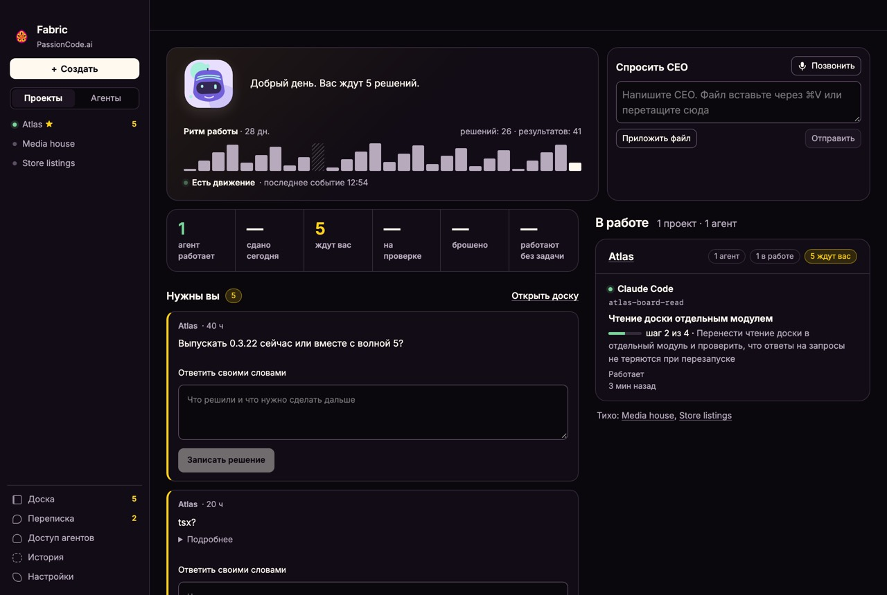
На главной поле «Спросить CEO» занимает высоту карточки, пустой полосы под кнопками нет. «Записать решение» в неактивном виде как остальные неактивные кнопки. Приветственный блок не тронут: он остаётся лёгким.
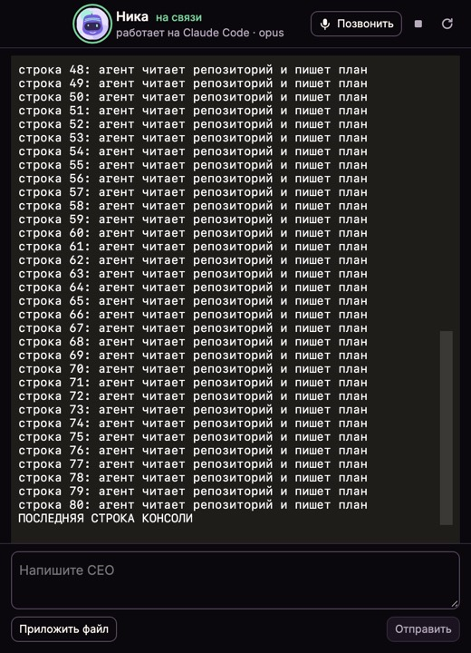
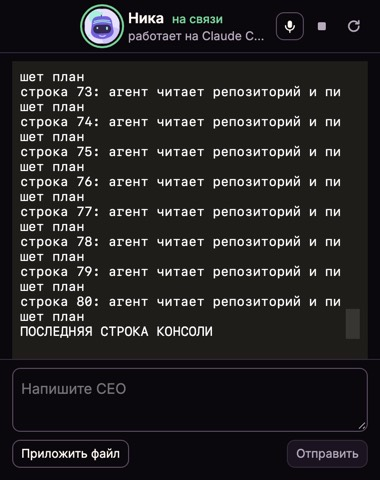
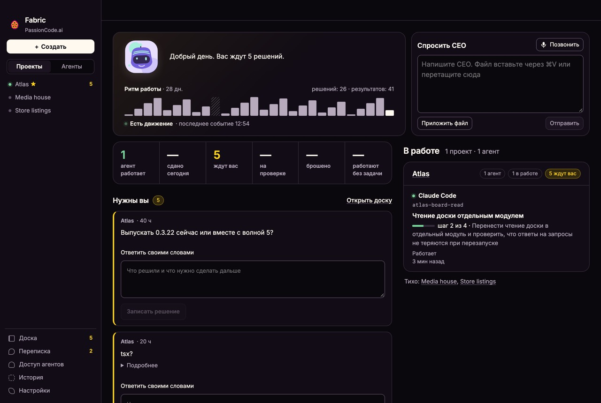
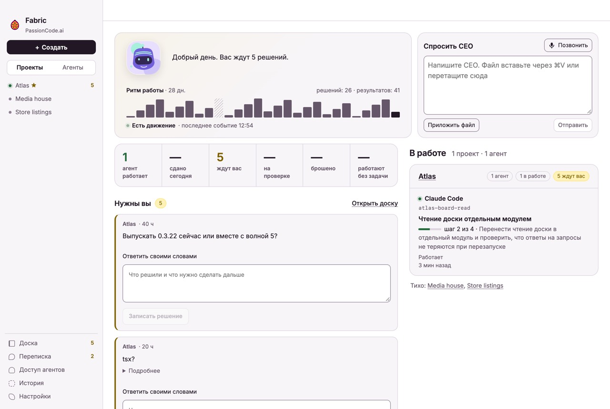
Проверка нашла одну регрессию итерации 3: неактивная «Записать решение» на карточках «Нужны вы» почти исчезла (старое правило opacity: .4 гасило новую нейтральную заливку). Исправлено: заливка без прозрачности и видимый контур. Ещё: значки «Остановить» и «Перезапустить» отодвинуты от «Позвонить», чтобы квадрат не читался как «положить трубку»; строка «работает на …» показывает полный текст при наведении; сценарий SCN-182 описывает поле так, как оно теперь выглядит.
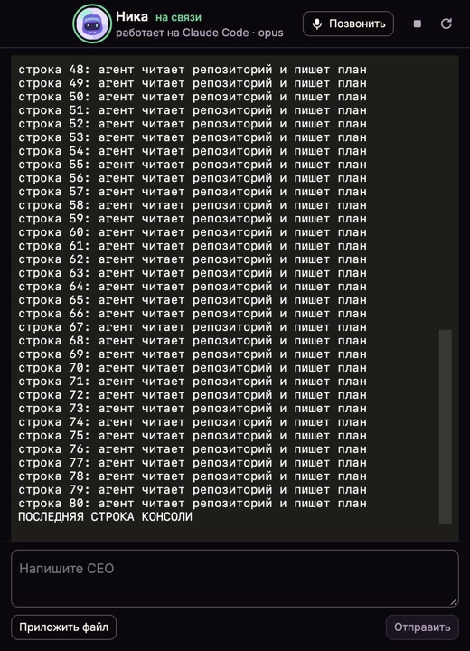
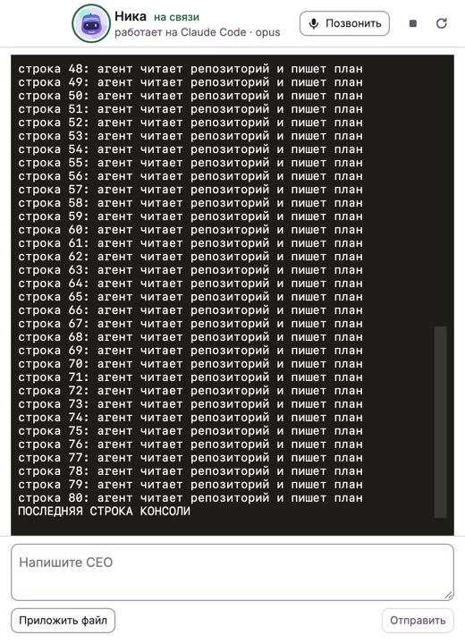
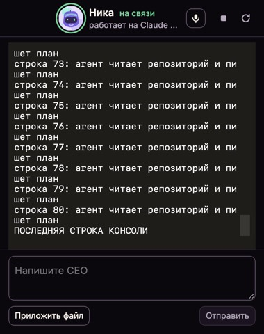
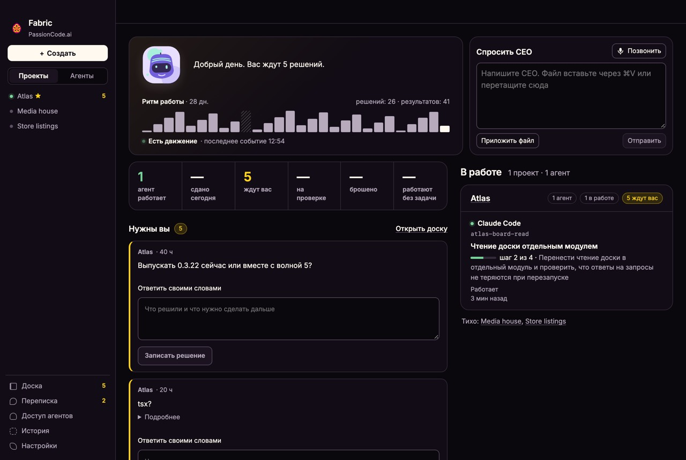
design-review.md (design-tester по этим снимкам).